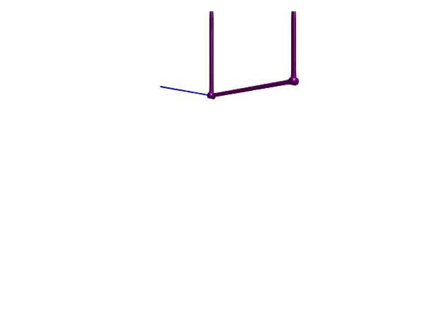

Modeling kinematic loops
Kinematic loops can be difficult to simulate since they introduce an over-constrained system. This tutorial demonstrates how to handle a few common cases of kinematic loops.
A planar kinematic loop
A planar loop is one where the loop is confined to a plane, i.e., all joints in the loop have parallel rotation axes. To simulate a mechanism with such a loop, we break the kinematic loop by replacing one of the revolute joints with a RevolutePlanarLoopConstraint. The model below contains four bars connected by revolute joints, forming a planar loop. In order to make the animation interesting, we attach dampers to two of the joints such that the mechanism will oscillate for a while before coming to rest.
Perhaps surprisingly, we use 5 joints in total for this mechanism. If we had used four joints only and connected the first frame of the first joint to the world, the mechanism would not be free to rotate around the world frame. We thus have two joints connected to the world frame below.
using Multibody
using ModelingToolkit
import ModelingToolkitStandardLibrary.Mechanical.Rotational
using Plots
using OrdinaryDiffEq
using LinearAlgebra
using JuliaSimCompiler
t = Multibody.t
D = Differential(t)
world = Multibody.world
systems = @named begin
j1 = Revolute(useAxisFlange=true) # We use an axis flange to attach a damper
j2 = Revolute(useAxisFlange=true)
j3 = Revolute()
j4 = RevolutePlanarLoopConstraint()
j5 = Revolute()
b1 = BodyShape(m=1, r = [2.0, 0, 0])
b2 = BodyShape(m=1, r = [0.0, 2.0, 0])
b3 = BodyShape(m=1, r = [-2.0, 0, 0])
b4 = BodyShape(m=1, r = [0.0, -2.0, 0])
damper1 = Rotational.Damper(d=0.5)
damper2 = Rotational.Damper(d=0.1)
end
connections = [
connect(world.frame_b, j1.frame_a)
connect(j1.frame_b, b1.frame_a)
connect(b1.frame_b, j2.frame_a)
connect(j2.frame_b, b2.frame_a)
connect(b2.frame_b, j3.frame_a)
connect(j3.frame_b, b3.frame_a)
connect(b3.frame_b, j4.frame_a)
connect(j4.frame_b, b4.frame_a)
connect(b4.frame_b, j5.frame_a)
connect(j5.frame_b, world.frame_b)
# We need 5 joints since j1.frame_a is rigidly attached to the world, and b4 closing the loop would thus not be able to rotate around j1.
connect(j1.axis, damper1.flange_a)
connect(j1.support, damper1.flange_b)
connect(j2.axis, damper2.flange_a)
connect(j2.support, damper2.flange_b)
]
@named fourbar = ODESystem(connections, t, systems = [world; systems])
m = structural_simplify(IRSystem(fourbar))
prob = ODEProblem(m, [], (0.0, 30.0))
sol = solve(prob, Rodas4(autodiff=false))
plot(sol, idxs = [j1.phi, j2.phi, j3.phi])
using Test
@test SciMLBase.successful_retcode(sol)
@test sol(sol.t[end], idxs=j3.phi) % 2pi ≈ π/2 atol=0.1 # Test the the "pendulum" is hanging almost straight down after sufficient time has passed
@test sol(sol.t[end], idxs=j2.phi) % 2pi ≈ -π/2 atol=0.1Test Passed3D animation
Multibody.jl supports automatic 3D rendering of mechanisms, we use this feature to illustrate the result of the simulation below:
import CairoMakie
Multibody.render(fourbar, sol, 0:0.033:10; z = -7, R=Multibody.rotx(20, true)*Multibody.roty(20, true), filename = "fourbar.gif") # Use "fourbar.mp4" for a video file